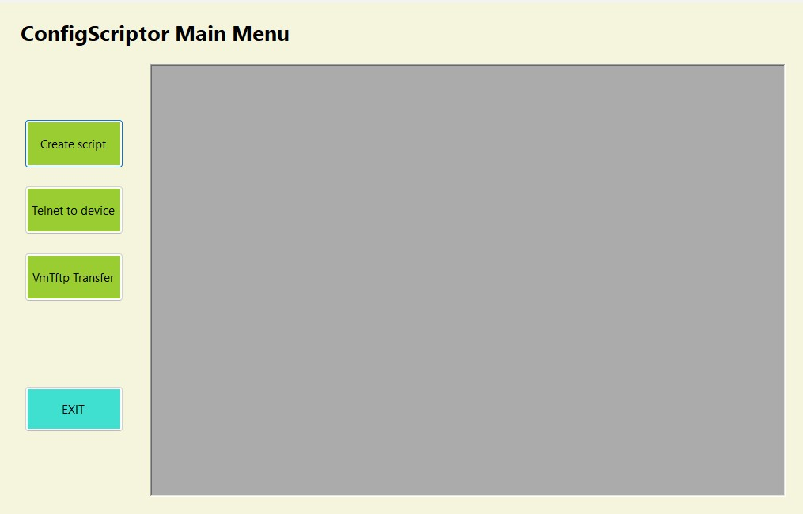
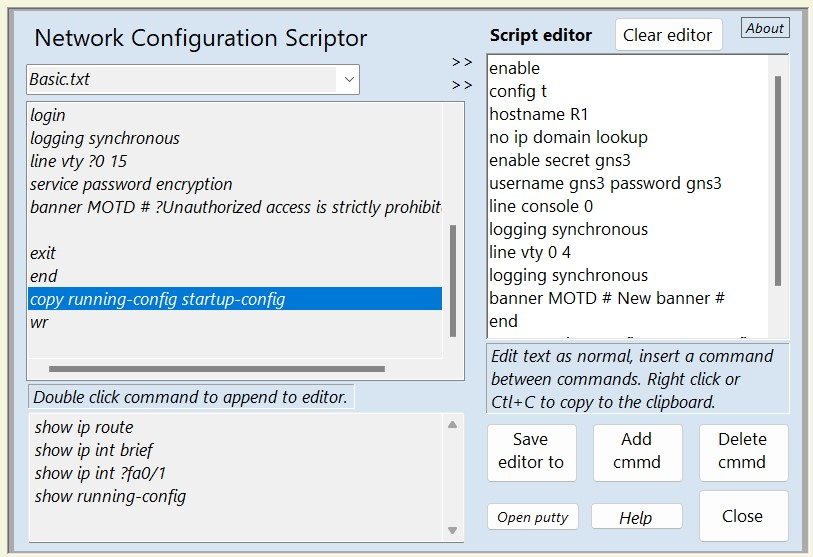
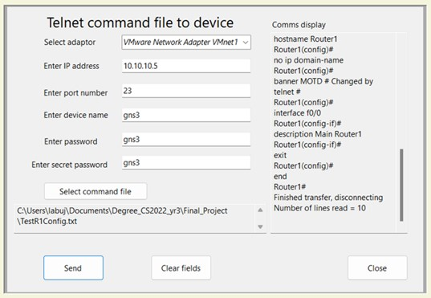
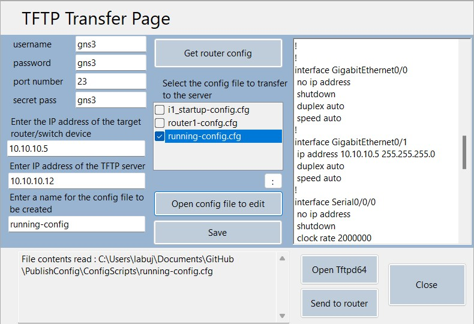

The tool has been written in C# and uses the .NET Core 3.1 windows form framework. Each form is fully decoupled
allowing for each method to be extracted and used separately elsewhere by any learner. The telnet
connection is in a separate class and called in the telnet and Tftp forms. The front end design was chosen
as effective means of displaying separate forms in a single display thus reducing screen space.
The source code can be accessed from
githubor download the applicationzipfile.
This tool has been developed from a need to reduce the repetitive typing of learned network commands
when a learner is configuring routers and switches in a network topology.
It can be used on directly
connected devices, virtual devices in GNS3, and in a limited capacity for Packet Tracer. Similar to
the first project, a menu is used as a container for a user to open an instance of each required form
using a singleton design pattern.

A script containing a set of network configuration commands can be created from template text files stored
in a designated application folder. The template files are accessed and the contents displayed in the left of the
display for the user to select and begin constructing a script file displayed on the right.
Each template file can
include notes for the user's reference by using a ? to precede them. The command script is created in an
editable display for the user to add additional data required after a set command such as an IP address or
password. Show commands can also be included as reference and displayed in a separate read-only text box.
The user has full control and access rights to the template files for amendment and creation.
Once a script is created in the editor it can then be saved to a text file or copied and pasted directly to
the command line of a network device. An application folder is included to store these files but again the user has full
access rights to store them elsewhere. Right clicking in the editor will display a menu with additional
options such as opening a help file, append the script to an existing file, copy/paste, and file saving.
The terminal software 'Putty' is included for the user to copy the commands to a directly connected device.

A script can also be delivered to a device using a telnet connection.
Whilst this does require the setup of a device with a username, password,
ip address, and telnet access enabled, it acts as another method of file delivery.
This is intended to extend a learners ability and exposure to configuration procedures outside
of a virtual environment. The read-only display on the right shows the retrieval of the device's command line
for the user to view its activity and see if each command sent was correctly processed. The process simply reads
the text file to the command line and closes the connection when done.

It has been extended further to include a method of running configuration file backup and restore.
Using a telnet connection and a server (TFTPD64 included) 'copy running-config' commands are sent to a device.
Retrieved configuration files can be selected and displayed for viewing or editing for advanced learners.
The running-config files are chosen, rather than a startup-config file, to test first and minimise the effect of
configuration errors when restoring to a device.

The tool was eventually submitted as a final project and used to assist in creating WAN and LAN
topologies in an advanced networking assignment where both scored A grades.